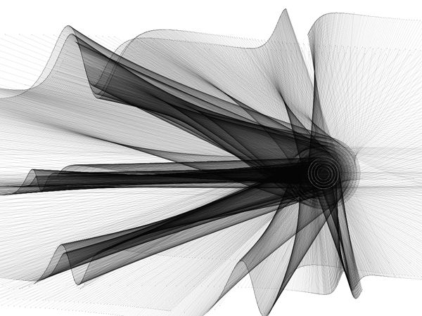
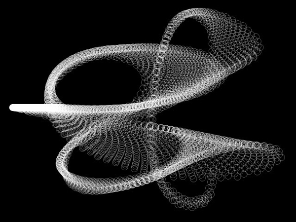
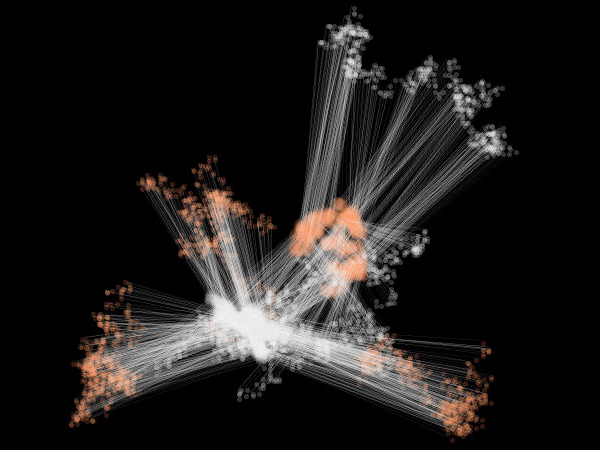
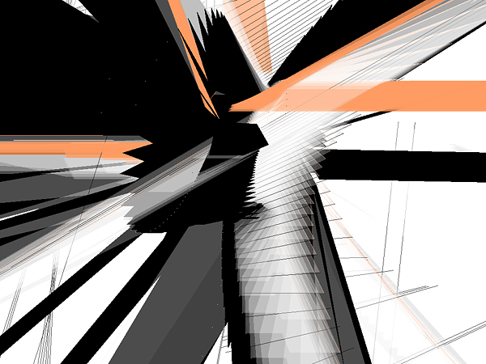
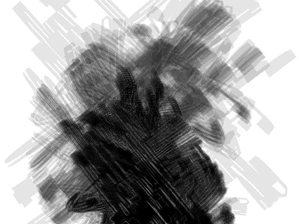
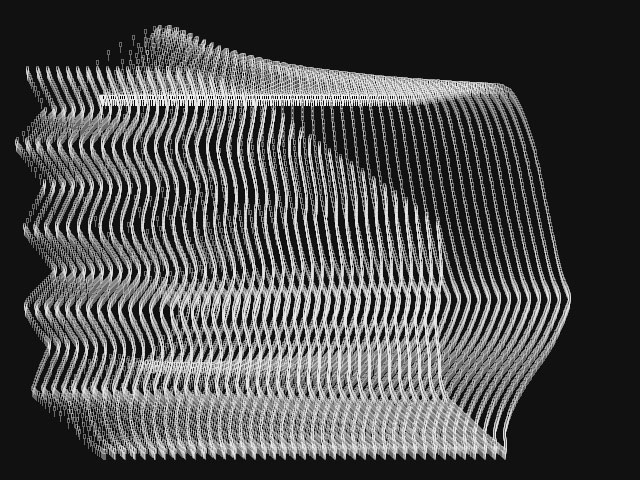

Re-move by the pseudonymous artist Lia allows users to manipulate a series of generative audiovisual compositions that balance organic forms with the rawness of fin-de-siècle Viennese abstraction. The works, which were created in Macromedia Director, are newly restored as part of Net Art Anthology.
Each composition on Re-move finds a unique balance among the artist’s formal choices, user interaction, chance, and algorithmic processes. Thus, they convey the idea that the computer is less an artistic tool in a traditional sense than an interplay among disparate processes. Balancing responsiveness, randomness, and repetition, the evolving abstractions that are generated allow the underlying processes that shape them to remain legible in spite of their complexity.